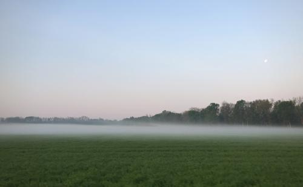
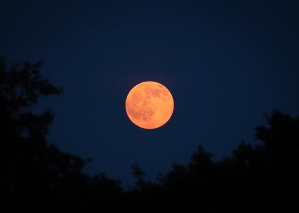

There are some things you just can't take pictures of… you just have to experience them firsthand. Anyone who has been to the Grand Tetons — or any other vast, majestic landscape — would agree; the Grand Canyon, the Rockies, even the ocean. Sure, you can snap the photo, but what comes out in the image pales in comparison… doesn't even come close to the actual vista.
I remember when I traveled to Wyoming and tried capturing the striking dynamic of the mountains against the plains and then feeling so let down when I looked at the pictures later. There was no hope of conveying the majesty I witnessed upon my return home. The only thing the photos could do is help bring back the memory of the feeling while I was there, but the folks who weren't there would never understand…

I was reminded of this fact a couple times this past weekend and realized the same can be said of astronomical scenes and pictures. I spent all day Saturday doing some Spring cleaning and maintenance in the observatory. (It was 70°F… in February. Welcome to Ohio.) Fortunately for me, the night was just as beautiful as the day and I got to spend some long-overdue time stargazing.
The moon was high and bright and the light pollution around my house seems to be getting worse by the day so I was limited in what I could see. I knew any images I attempted to take probably wouldn't turn out given the poor seeing conditions, so instead I thought I'd spend some simple quality time together with sky, just like old times. I brought my binoculars out, dragged the old dob out, and put a beer in my hand with Infinity overhead.
Jupiter and his majesty's moons looked awesome as usual. I could still make out the smoky Orion Nebula, but only barely and my imagination had to fill in the rest. So the only thing left were the stars… which, normally, most stars are kind-of boring… just tiny points of light. But there are a few that are breathtakingly pretty — literally.
If you look at Rigel — Orion's foot — you'll notice a bright white star with a blue hue; gorgeous in its own right. But if you immediately swing the scope up to his shoulder and spy Betelgeuse, you'll be rewarded with the most pure, brilliant, copper-red you've ever seen… and it's only enhanced when contrasted with sapphire Rigel. It's impossible to capture that sight on film — believe me, I've tried. I can't even describe it in words. It's a color I don't think you can experience anywhere else in the world. It's utterly unique and heartbreakingly pretty.
Another sight that's tough to accurately portray in a photograph is a setting full moon. I know what you're thinking — you've seen tons of beautiful photos of the moon hovering just over the horizon — and that's probably true. But again, if you've ever seen it firsthand on a crisp Spring morning shining bright just over a fog-covered field, you know it's not the same. With a navy blue backdrop that perfectly contrasts the almost out of place, glowing orange sphere, and the morning birds providing a perfect soundtrack, the real thing beats a picture every single time.

Next time you have a chance to witness one of these spectacles, resist the urge to pull out your phone to snap a picture… your fake internet points you'll get from posting the shot to the social media of your choice will never equal the real fleeting seconds you'll spend taking in the moment firsthand. Let's enjoy our time here. Now. Because, "we are like butterflies who flutter for a day and think it is forever." — Carl Sagan